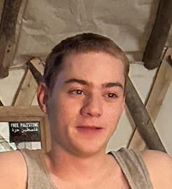

Meet Our Team
Brandon Bunt
Brandon, the founder of MUDBUG, uses his background in mechanical engineering, design, hydroponics, and mycomaterials to transform the collected environmental data into farm management decisions.
Ani Vardanyan
Ani Vardanyan, the lead electrical engineer, is focused on designing proprietary low-cost sensors using e-waste.
Manhim Liu
Manhim is working on the design of sensors while also focusing on powering the modules using renewable sources of energy.
Isaac Amar
Isaac is developing the wireless communication mesh network that is vital to getting the data from the sensors to the central point.
Jonghyeok (Burt) Kim
Burt is working on developing the central point where all the data is traveling to while also focusing on the user interface that allows for easy reading of data.

Spencer Kirsch
Spencer brings everything together by focusing on modular housing that would protect all the electronics that we are exposing to the environment.